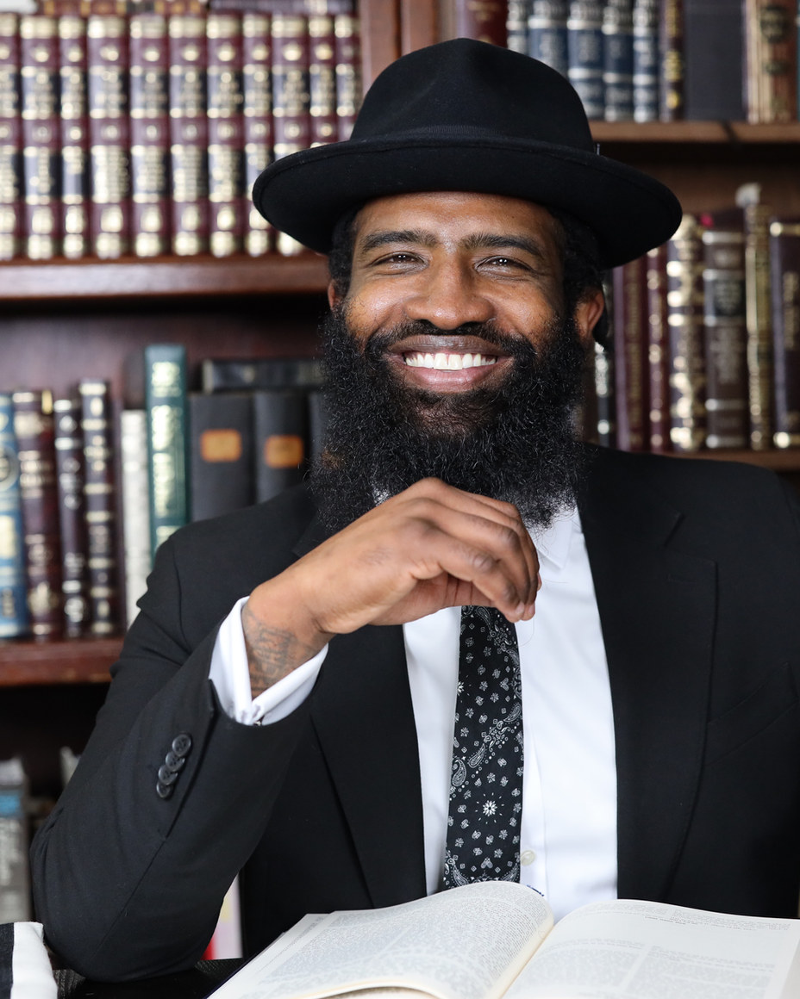

A Life of Purpose
Dr. Yehudah Pryce, DSW, LCSW, spent more than 16 years incarcerated following a robbery arrest as a teenager. Since his release from prison on October 22, 2018, he earned a BA in Sociology with an emphasis in Social Welfare, an MSW from USC, where he served as Chair of the Unchained Scholars student caucus, and a Doctorate in Social Work. His doctoral capstone, Person-Centered Smart Decarceration, focused on advancing social work education and transforming the criminal legal system through the lens of lived experience.
Dr. Pryce currently serves as the Senior Director of Mental Health for Highland Behavioral Health and as a psychotherapist at the Chabad Treatment Center Intensive Outpatient Program (IOP). He also provides psychotherapy to individuals serving life sentences through the non-profit organization Uncommon Law.
Previously, he served as the Senior Director of National Mental Health & Well-Being Programs at Defy Ventures, a national nonprofit supporting individuals during incarceration and reentry. Earlier, he worked as a clinical social worker with the Orangewood Foundation Young Adult Court Program, collaborating with justice-impacted transitional-age youth, judges, district attorneys, probation officers, and public defenders.
Drawing from both professional expertise and lived experience, Dr. Pryce is dedicated to advancing mental health, recovery, rehabilitation, and successful community reintegration. Dr. Pryce (Yehudah ben Avraham) underwent an Orthodox gerus through the Rabbinical Council of California. He lives in Los Angeles, California, with his wife and five children.
The Path to Healing
The Beginning
Sentenced to 24 years as a teenager; served over 16 years incarcerated.
Education
BA, Adams State University, Summa Cum Laude.
Master of Social Work
USC Suzanne Dworak-Peck; chaired Unchained Scholars.
Doctorate
Simmons University; Student of the Year.
Practice Today
LCSW #126620 — psychotherapy, coaching, forensic consultation.